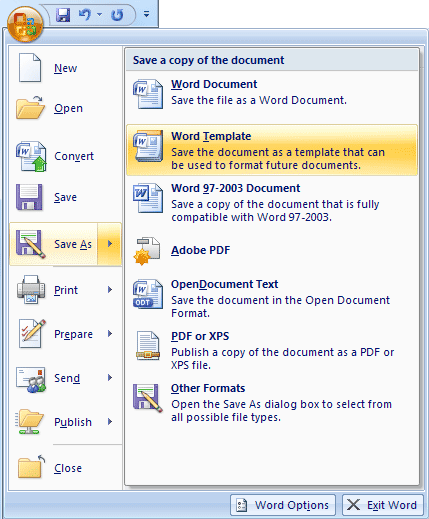
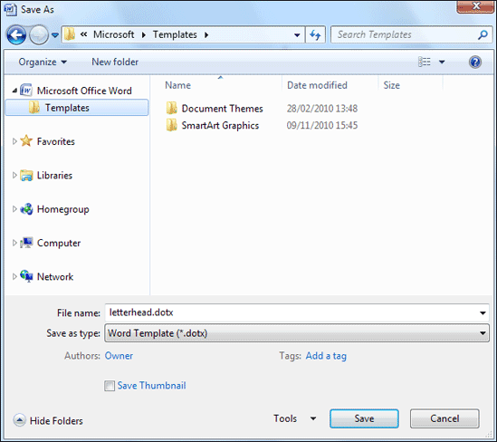
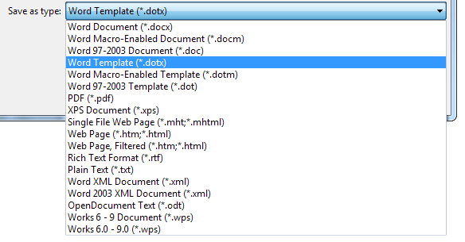
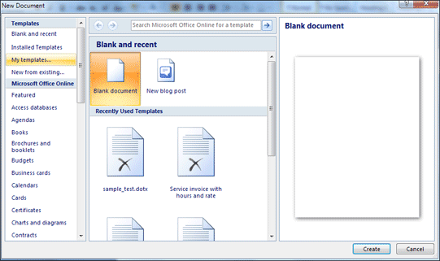
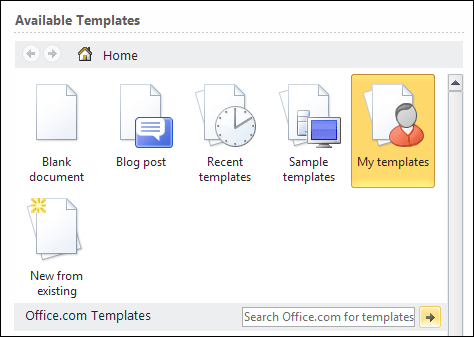
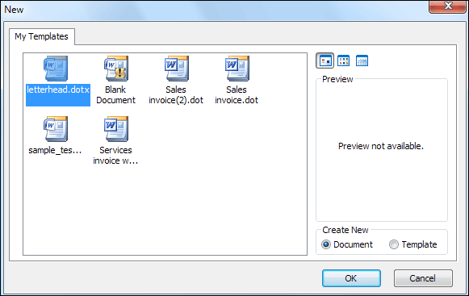

Free
computer Tutorials
|
Free
computer Tutorials
|
|
 home home |
|
|||||
Microsoft Word 2007 to 2010Saving Word documents as a templateSaving a document as a Word template is fairly straightforward in Office 2007 or 2010. So, from the round Office button in the top left of Word 2007, select Save As. You should the following options appear:  Click on Word Template from the list and you'll see the Save As dialogue box appear:  In Word 2010, click on the File tab, then the Save As item from the left menu. You'll see the same dialogue box as above. Click the Templates item in the top left of the dialogue box.
The first thing to notice is which folder we have switched to. (This dialogue box is from Windows 7, but Vista users should see more or less the same thing.) If you look in the top left of the dialogue box you will see an item for Microsoft Office Word. Underneath this is a Templates folder. The Templates folder is the one we have selected. When you have selected the folder, you should see the area to the right change. Ours has two folders, Document Themes, and SmartArt Graphics. Word 2010 users will also see a LiveContent folder. The second thing to notice is the File Name and Save as Type areas at the bottom of the dialogue box. The Save as Type area says "Word Template". In round brackets you can see the Type of file it is - a DOTX file. The DOTX signifies a template file. If yours says DOCX instead of DOTX then click on the Save as Type box to see the file type menu. Select DOTX from the list:  For the file name we have typed letterhead. But you can call it anything you like. Note that the extension is also showing - letterhead.dotx. (If you can't see a file extension then see this tutorial on our site: How to Enabled File Extensions Once you have chosen a file name, click the Save button at the bottom. To check if it worked, click the round Office button in the top left (Word 2007). Click New and a dialogue box should appear:  From the left, under Templates, click on My Templates.
In Word 2010, click the File tab then the New item on the left menu. Then click on My Templates from the ones that appear:  In both version, when you click on My Templates, you will see another dialogue box appear. This one:  You should then see the template you have created, letterhead.dotx in our case. Click this item to select it, and then the OK button at the bottom of the dialogue box. You will then have a new letterhead document, complete with the logo you created. And that's just about it for templates. You should now be able to create a template from any Word document that you create. Before we leave the subject, however, be aware of all the inbuilt templates that you can use. If you click on Installed Templates instead of My Templates, you'll see the ones immediately available to you, ready to adapt to your own needs. There are also a lot of templates available under the heading Microsoft Office Online, or Office.com Templates in Word 2010. These are ones that you download from the internet. Again, you can adapt them to your own needs.
In the next section you'll learn about Mail Merge in Microsoft Word. Mail Merge in Word 2007/Word2010 --> <--Back to the Word Contents Page View all our Home Study Computer Courses
|
||||||
|